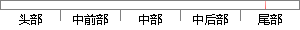

完善的系统测试是软件开发周期中必不可少的环节，良好的测试为系统质量提供了重要保证。
片段位置图

相似结果|
相似片段 1：，是保证软件质量的最后一步。系统而全面的测试是成功实现软件开发目标的重要保障【2l】。6．1测试方法软件测试是软件开发周期中重要、必不可少的环节，是软件质量的把关者。一个成功的系统需要不断的测试、修改，测试、修改，开发人员需要具备良好的测试能力和习惯。
相似片段 2：管理系统的测试策略69软件测试是保证软件质量和生存周期、提高软件可靠性的重要手段，是软件开发周期中必不可少的环节[37]。软件测试方法可分为不同类型：按测试用例设计方法可划分为白盒测试和黑盒测试；按
相似片段 3：一道关卡，因此软件测试是软件开发周期中至关重要的环节。软件测试，是对软件开发的需求调研、系统设计、系统开发的最终校验，因此它的质量将直接反应软件产品的质量。由此可以推断，高质量的软件测试是高质量的软件
|
※ 片段修改建议 ※
近似词参考：- 完善：完美 美满
- 系统：体系
- 环节：关键
- 良好：杰出 精良 优秀 优越 优良
- 系统：体系
- 提供：供给 供应
- 重要：主要 紧张 首要
- 保证：包管
系统自动生成语句：完美的体系测试是软件开发周期中必不可少的关键，杰出的测试为体系质量供给了主要包管。
注：本片段修改建议为系统自动生成，仅供参考。